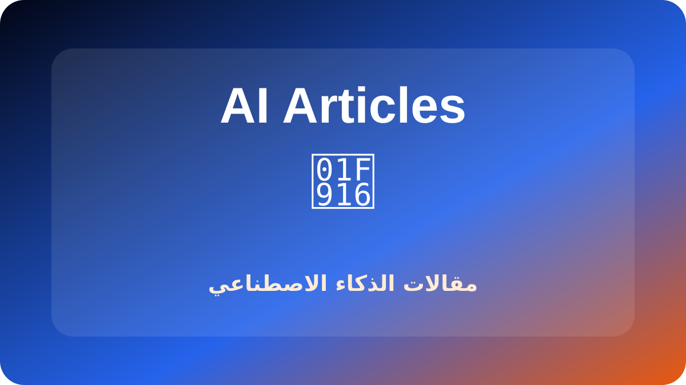

مراجعة ChatGPT
استخدام عملي للكتابة والتحليل وتنظيم العمل اليومي.
اقرأ المقال →مقالات عملية مرتبة حسب التخصص تساعدك على اختيار الأدوات وبناء محتوى ومشروع رقمي قابل للنمو.
روابط هذه المقالات تقود إلى صفحات منشورة فعلاً داخل الموقع.

استخدام عملي للكتابة والتحليل وتنظيم العمل اليومي.
اقرأ المقال →أدوات تساعد في كتابة المقالات، الإعلانات، ووصف المنتجات.
اقرأ المقال →
دليل لاختيار أدوات التصميم والصور المناسبة لصناع المحتوى.
اقرأ المقال →
أدوات للمحتوى والتحليل وتحسين صفحات الأفلييت.
اقرأ المقال →تنظيم المقالات والعناوين والروابط الداخلية بطريقة مفيدة.
اقرأ المقال →أدوات لبناء workflows وتوفير الوقت في الأعمال الرقمية.
اقرأ المقال →خطة عملية لزيادة الزيارات باستخدام المحتوى وSEO.
اقرأ المقال →أدوات تساعد على إنشاء وتحرير الفيديو للمحتوى الرقمي.
اقرأ المقال →
أدوات لتحويل النص إلى صوت، التفريغ، وإنتاج البودكاست.
اقرأ المقال →أدوات مساعدة للمطورين في كتابة الكود وفهمه بسرعة.
اقرأ المقال →طرق عملية لاستخدام الذكاء الاصطناعي في إدارة المهام.
اقرأ المقال →
مراجعة عربية شاملة للتطبيقات والتحديات والآفاق المستقبلية.
اقرأ المقال →